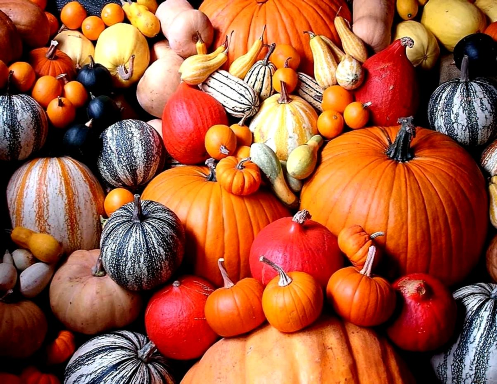
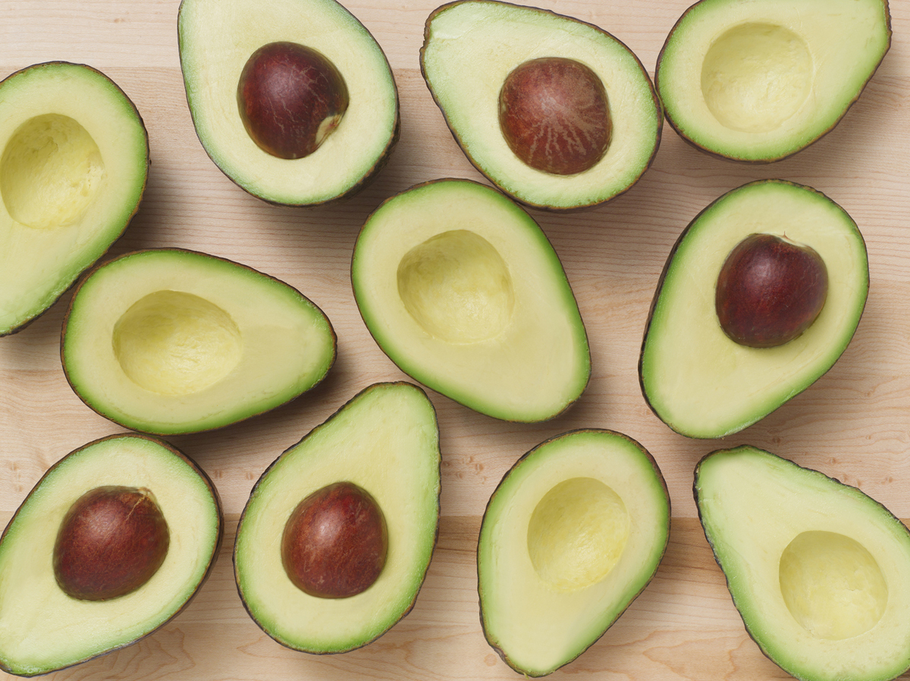

Get Creative!

Explore Culture

Considered a "strict vegetarian", a vegan refrains from consuming
animal products of any kind, including dairy, butter, eggs, and fish. Some vegans go so far as to avoid the use of animals as a part of body coverage, such as purses, belts and shoes as well.
Many diets in the diet culture embrace the idea of veganism to a ceratine degree, including paleo, which focuses on all natural and whole foods (exlcuding the animal-product portion, obviously), and even the ketogenic community has had
folks follow a vegan regimine, and even still stay in Ketosis!
No matter what kind of diet you may follow, it's important to know what you are putting in your body, weather it be through skin products, food, or drinks! Remember- YOU ARE WHAT YOU EAT!
There are several ways to get up to speed quickly with a vegan lifestyle, but it's best to take things slowly and allow time for your body and mind to adapt. The best thing you can do to incorporate
a vegan mindset, is to work on replacing more meals throughout your day with more vegetables and fruits, with the idea that eventually, those nutrious options will become your primary souce of fuel.
What does a healthy, whole food look like? As a vegan (in this case, a plant based individual), it's important to know how to make sure your body is getting the most essential nutrients that it can.
TL:DR Smoothies are your friend 🧡